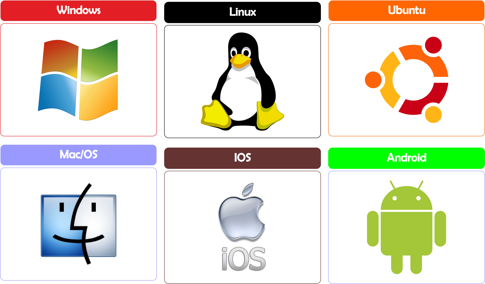
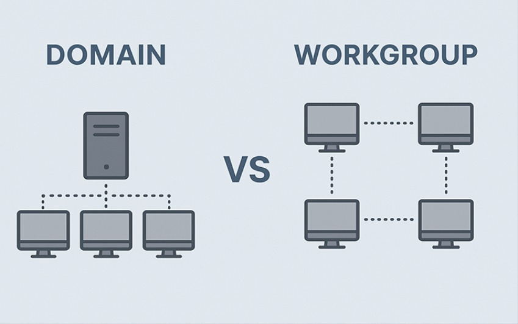

¿Qué es un sistema operativo?
Un sistema operativo es el software principal de un ordenador. Se encarga de gestionar el hardware, permitir la ejecución de programas y facilitar la interacción con el usuario. Sin sistema operativo, un ordenador no es funcional.

Sistema operativo de escritorio vs servidor
No todos los sistemas operativos están pensados para lo mismo. Existen sistemas operativos de escritorio, diseñados para un uso personal, y sistemas operativos de servidor, optimizados para ofrecer servicios a múltiples usuarios y equipos en red.
- Escritorio: pensado para un único usuario (Windows 10/11).
- Servidor: pensado para dar servicio a muchos usuarios y equipos (Linux Server, Windows Server).

¿Qué es una red informática?
Es un conjunto de equipos conectados entre sí para compartir recursos e información. Las redes pueden ser tan pequeñas como una red doméstica o tan grandes como Internet. Existen diferentes tipos de redes según su alcance y propósito, pero todas comparten el objetivo de facilitar la comunicación entre dispositivos.
- Red local (LAN): red que cubre un área geográfica limitada, como una oficina o una casa.
- Relación cliente – servidor (Dominio): modelo de comunicación donde los clientes solicitan servicios y los servidores los proporcionan.
- Comunicación entre equipos (Workgroup): intercambio de información entre dispositivos conectados a la red.

Conceptos básicos de red que debes conocer
Para comprender como funcionan los sistemas operativos en red, es importante tener claros algunos conceptos básicos de redes. Estos elementos son fundamentales para configurar y administrar una red correctamente.
- Dirección IP: es la identificación única de un dispositivo en una red.
- Máscara de subred: se utiliza para determinar a qué red pertenece una dirección IP.
- Puerta de enlace: es el dispositivo que permite la comunicación entre diferentes redes.
- Servidor DNS: traduce nombres de dominio en direcciones IP.
- DHCP: protocolo que asigna automáticamente direcciones IP a los dispositivos en una red.

Uso básico de la terminal
La terminal es una herramienta esencial para administrar sistemas operativos en red. Permite ejecutar comandos de texto para realizar tareas de configuración, administración y resolución de problemas. Aunque puede parecer intimidante al principio, aprender a usar la terminal te dará un control total sobre el sistema.
Dependiendo del sistema operativo:
- Linux:ifconfig, ls, ping, telnet, etc.
- Windows (PowerShell): ipconfig, ping, dir, Get-Process, etc.
# Comandos básicos en Linux
ifconfig
ping google.com
# Comandos básicos en Windows PowerShell
ipconfig
ping google.com